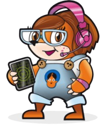
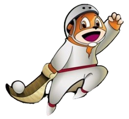

<ion-header [translucent]="true">
  <ion-toolbar>
    <ion-buttons slot="start">
      <ion-back-button></ion-back-button>
    </ion-buttons>
    <ion-title>
      Hasierako orria
    </ion-title>
  </ion-toolbar>
</ion-header>

<ion-content [fullscreen]="true" class="ion-padding">
  <div class="background">
    
    <div class="content-center">
      <h2 class="center-title styled-title">Gernikatik Mundura</h2>
      <ion-button expand="block" color="warning" class="center-button">
        Jolastu
      </ion-button>
    </div>
    <div class="character-section">
      
      
    </div>
  </div>
</ion-content>

<style>
  .background {
    position: absolute;
    top: 0;
    left: 0;
    width: 100%;
    height: 100%;
    overflow: hidden;
  }

  .background-image {
    position: absolute;
    width: 100%;
    height: 100%;
    object-fit: cover;
  }

  .content-center {
    position: absolute;
    top: 40%;
    left: 50%;
    transform: translate(-50%, -50%);
    text-align: center;
  }

  .center-title {
    font-size: 18px;
    font-weight: bold;
    color: #fff;
    margin-bottom: 150px;
  }

  .styled-title {
    font-family: 'Arial', sans-serif;
    font-size: 24px;
    font-weight: bold;
    color: orange;
    text-shadow: -1px -1px 0 #fff, 1px -1px 0 #fff, -1px 1px 0 #fff, 1px 1px 0 #fff;
  }

  .center-button {
    --border-radius: 15px;
    font-weight: bold;
  }

  .character-section {
    display: flex;
    justify-content: center;
    gap: 20px;
    position: absolute;
    bottom: 10%;
    left: 0;
    right: 0;
    text-align: center;
  }

  .character {
    width: 100px;
    height: auto;
  }
</style>
